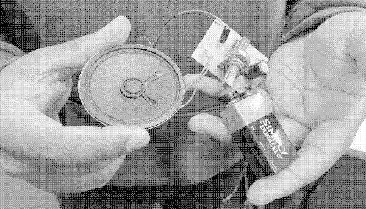

Based in Belfast, noise guaranteed is a collective effort to encourage and nuture critical perspectives on music technology. Together we learn through our practice of building electronic tools for music making.

If there's one thing we can guarantee in our workings, writings and speech, it's noise. In fact we want to make and embrace noise. We want to question the origins of the technology we use. We're not scientists, engineers or ethicists in the traditional sense. We are not formally trained in these disciplines. However, we have a right to question from a position of naivety. Our view from afar, our view from below will mature and our questions will refine.